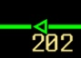

DispatchStation
Web-based simulation of the EBICOS 900 traffic management and dispatching system
Navigation
Home
Simulation
Docs
Quick Start
Commands
Track Objects
User Interface
Track Objects
Every signals, point machines etc. which are connected to the signalling system are called track objects.
Signals
Signals are the main communication way between the train drivers and the signalling system. They have two aspects; red and green. Because of this, the speed limits are transmitted to the train using the EBICAB 700 ATC system.
Here are some examples of how signals can be displayed in the EBICOS system:
-
Blank
There is no route set and the aspect is red.
-
Red
Signal is at the end of a route and the aspect is red.
-
Blocked

The signal is closed and blocked with the BSK command. The aspect is red.
-
Green

A route from this signal is set and the train can continue. The aspect is green.
-
Cancelled
A route from this signal was set but then it was cancelled. The signal will stay closed for a minute for safety. The aspect is red.
-
End of Track / Signalling
End of track / signalling signals have a different shape, but the usage is the same. They always show the red aspect.
The queued routes are also shown with small triangles.
Switches
Switches can be moved to diverging/normal positions using the attached point machines. They can be displayed like this:
-
Normal
The switch is in normal position.
-
Diverging

The switch is in diverging position.
-
No Position
The switch is not set to any position. This is mostly shown when the switch is being set.
-
Local Control
The switch is in local control mode. It can't be controlled from the EBICOS system and its position can't be seen.
-
Flank Protection
The switch is in flank protection. It'll stay locked in this position until the route which is reached when following the diverging position is clear.
Track Circuits
Track circuits detect the existence of a train at the part of a line. Since only one train can be in a single block, they serve a critical purpose.
-
Gray
There is no route set.
-
Green
A route via this track circuit is set.
-
Red
The track circuit is occupied.
-
Purple
A route via this track circuit was set but then cancelled.